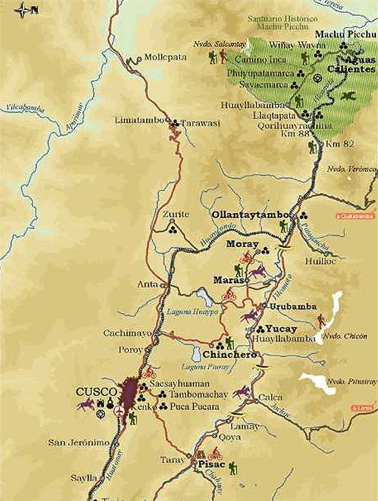
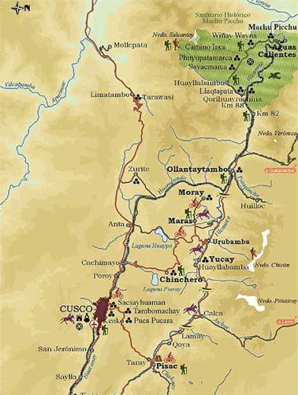

Luxury and First-Class Accomodations
Cuzco the Inca Trail, Machu Picchu, Cuzco Lima
Cuzco (somtimes spelled Cusco) is the archaeological capital of South America, with fine examples of Inca history and architecture. The Fortress of Sacsayhuaman, where the Incas celebrated their religious events, contains the Inca Baths, the Kenko Amphitheater and the Koricancha Temple. Cuzco is also rich in colonial heritage and remains much as it was during the colonial period.
To the south of Cuzco, lie the ruins of Piquillacta, and the beautiful colonial Andahuay lillas Church (named the Peruvian Sistine Chapel). Further south is the "Sacred Valley of the Incas" which is filled with colorful Andean villages and several hotels. One of these villages is Pisac, with its stately ruins and colorful Indian Market Fair and the famous Ollantaytambo Inca Fortress. Picchu, called the "Lost City of the Incas", was discovered in 1911 by Hiram Bingham, and is actually lower than Cuzco. The beautifully preserved ruins consist of an enormous stone city hidden by a spectacular terraced green mountain plateau surrounded by three towering peaks.
 

{kind=link}
{kind=link}